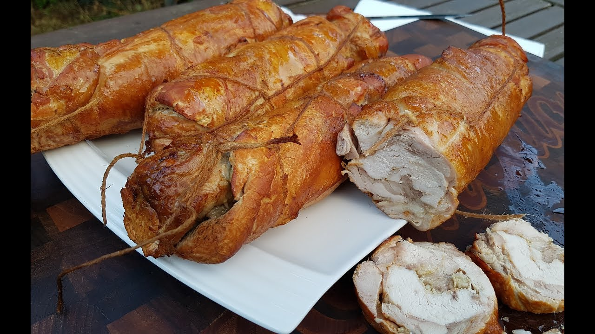

Сало копченное
Настоящее домашнее сало, приготовленное по традиционным рецептам без лишних добавок. Сначала продукт проходит засолку, затем медленно коптится на древесной щепе. Благодаря этому сало приобретает глубокий аромат дыма, плотную, но мягкую текстуру и насыщенный вкус. Домашнее производство гарантирует натуральность и отсутствие искусственных усилителей вкуса.

Окорочка капченные
Куриные окорочка, приготовленные в домашних условиях с последующим копчением на натуральной древесине. Мясо получается сочным внутри и с ароматной, золотистой корочкой снаружи. Без искусственных добавок и усилителей вкуса. Подходят как для горячих блюд, так и для холодных закусок.
Cало с чесноком и зеленью
Сало, приготовленное вручную с добавлением свежего чеснока и ароматной зелени. Каждый кусочек пропитывается натуральными специями, что придаёт продукту свежий, слегка пряный и очень аппетитный вкус. Засолка и выдержка проходят традиционным способом, без химии и ускорителей. Отлично подходит для семейного стола и закусок.

Сало с чесноком и специями
Классическое сало с добавлением чеснока и молотого чёрного перца. Простое, но очень насыщенное сочетание, которое раскрывает натуральный вкус продукта. Сало проходит естественную засолку и выдержку, благодаря чему сохраняет плотную структуру и яркий аромат. Идеально для любителей пикантных закусок.

Стейки капченные
Отборные мясные стейки, приготовленные вручную и копчёные по традиционной технологии. Домашнее копчение придаёт продукту насыщенный аромат дыма и выраженный мясной вкус. Используются только натуральные специи и соль. Отличный вариант для сытного домашнего стола.
Рулет куринный варенно-капченный
Куриный рулет, который сначала аккуратно отваривается для мягкости и сочности, а затем слегка коптится для придания аромата. Получается нежный, диетический и в то же время ароматный продукт. В составе только натуральное мясо и специи, без химических добавок.

Рулет куринный варенный
Нежный куриный рулет, приготовленный методом аккуратной варки. Используется только отборное куриное мясо и натуральные специи без искусственных добавок и консервантов. Благодаря щадящей термической обработке рулет получается особенно мягким, сочным и лёгким по вкусу. Отлично подходит для диетического питания, бутербродов и холодных закусок.
Голени капченные
Аппетитные куриные голени, приготовленные по домашней технологии с последующим копчением на натуральной древесной щепе. Благодаря медленному процессу копчения мясо сохраняет сочность внутри и приобретает насыщенный аромат дыма снаружи. Используются только свежие куриные голени, соль и натуральные специи без искусственных добавок и усилителей вкуса. Кожица получается ароматной и слегка золотистой, а мясо — мягким, нежным и хорошо пропитанным вкусом копчения. Идеально подходят как самостоятельное блюдо, закуска или дополнение к гарнирам и салатам.
Доставка по с.Кордай бесплатно, а также имеется доставка в г.Алматы если заказано сумарно продукции больше чем 30кг,в остальные части не доставляем. Для того чтобы сделать заказ нажмите: Заказать